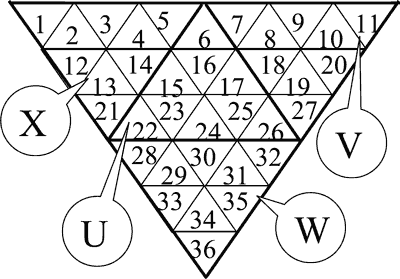
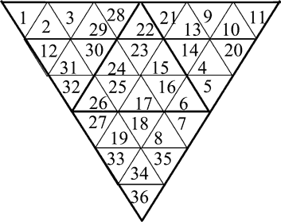
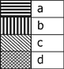

Home Page
F.A.Qs
Statistical Charts
Past Contests
Scheduled Contests
Award Contest
| Online Judge | Problem Set | Authors | Online Contests | User | ||||||
|---|---|---|---|---|---|---|---|---|---|---|
| Web Board Home Page F.A.Qs Statistical Charts | Current Contest Past Contests Scheduled Contests Award Contest | |||||||||
|
Language: Magic pyramid
Description There are many modifications of the famous Rubic’s Cube puzzle. One of those, called the Magic Pyramid, is based on a tetrahedron instead of the original cube. Faces of the tetrahedron are labeled with the Latin letters X, U, V, and W. Each face is divided into 9 equilateral triangles numbered from 1 to 36, as shown on Figure 1. To assemble the tetrahedron, the big triangle has to be folded down along the internal thick lines and the matching halves of the external thick lines have to be glued together. Each of the small triangles is painted into one of four distinct colors that we label with the Latin letters a, b, c, and d. There are exactly 9 triangles of each of the four colors.  • Fig. 1 We can transform the tetrahedron using the operation of ”rotate a face”. To perform this operation, we choose a face of the pyramid and orient the pyramid so that the chosen face is towards us. Then we determine the direction of the rotation (clockwise or counter-clockwise). Finally, we turn the part of the tetrahedron closest to the chosen face and having the thickness of 1/3 of the height of the tetrahedron by 120 degrees in the chosen direction, leaving the remaining part of the tetrahedron unmoved. Figure 2 illustrates the effect of rotating the face U in clockwise direction. In addition to rotating the faces, we can also apply the operation of ”magic re-paint”. This operation is defined by a permutation (p1, …, p36) of the integers 1 to 36. The effect of the operation is that the triangle currently in position i (according to the numbering given on Figure 1) is re-painted into the color of the triangle currently in position pi (according to the same numbering). All 36 triangles are re-painted simultaneously.  • Fig. 2 The puzzle is solved if, after applying a number of operations ”rotate a face” and/or ”magic re-paint” all triangles on each face of the tetrahedron have the same color. Write a program to solve the Magic Pyramid puzzle using the minimal possible number of moves. You may assume that all the test cases are solvable in 9 or less moves. Input The first line of the input contains 36 letters ’a’ … ’d’. The letter on the position i denotes the initial color of the triangle number i. It is known that each of the four letters occurs exactly 9 times on the first line of the file. The second line of the file contains 36 distinct integers 1…36 that describe the ”magic re-paint” operation. The ith integer on this line is the member pi of the permutation that defines the operation. Output The first and only line of the output should contain a string of characters ’X’, ’U’, ’V’, ’W’, ’x’, ’u’, ’v’, ’w’, and ’*’. The ith character should describe the ith move in the solution of the puzzle. Each operation ”rotate a face” is given as the label of the corresponding face, with lowercase letter denoting a turn in the clockwise and uppercase letter a turn in the counter-clockwise direction. The operation ”magic re-paint” is given as the character ’*’. If there are several solutions with the minimal number of moves, output any one of them. If the puzzle can be solved in no moves at all, output an empty line into the output. Sample Input ddddcccccabbbbbdcaabbbddacccaabddaaa 36 35 34 33 32 31 30 29 28 27 26 25 24 23 22 21 20 19 18 17 16 15 14 13 12 11 10 9 8 7 6 5 4 3 2 1 Sample Output *U Hint Explanation of the example: Figure 3 shows the initial coloring of the tetrahedron, and Figures 4 and 5 show the results of each operation. The colors of the triangles are given by the following patterns: 
Source Northeastern Europe 2005, Western Subregion |
[Submit] [Go Back] [Status] [Discuss]
All Rights Reserved 2003-2013 Ying Fuchen,Xu Pengcheng,Xie Di
Any problem, Please Contact Administrator